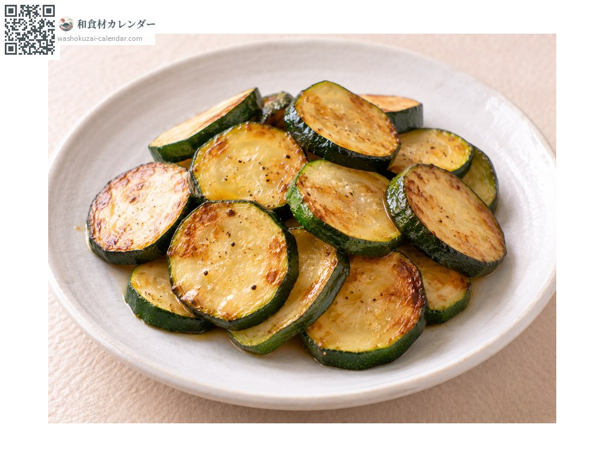
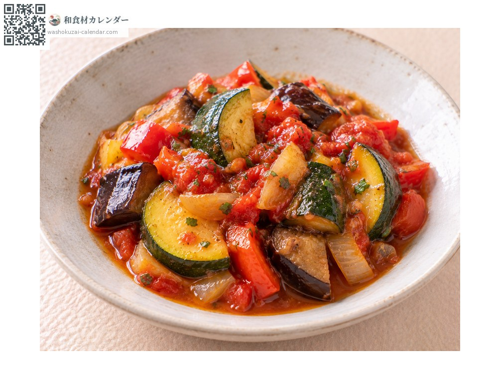
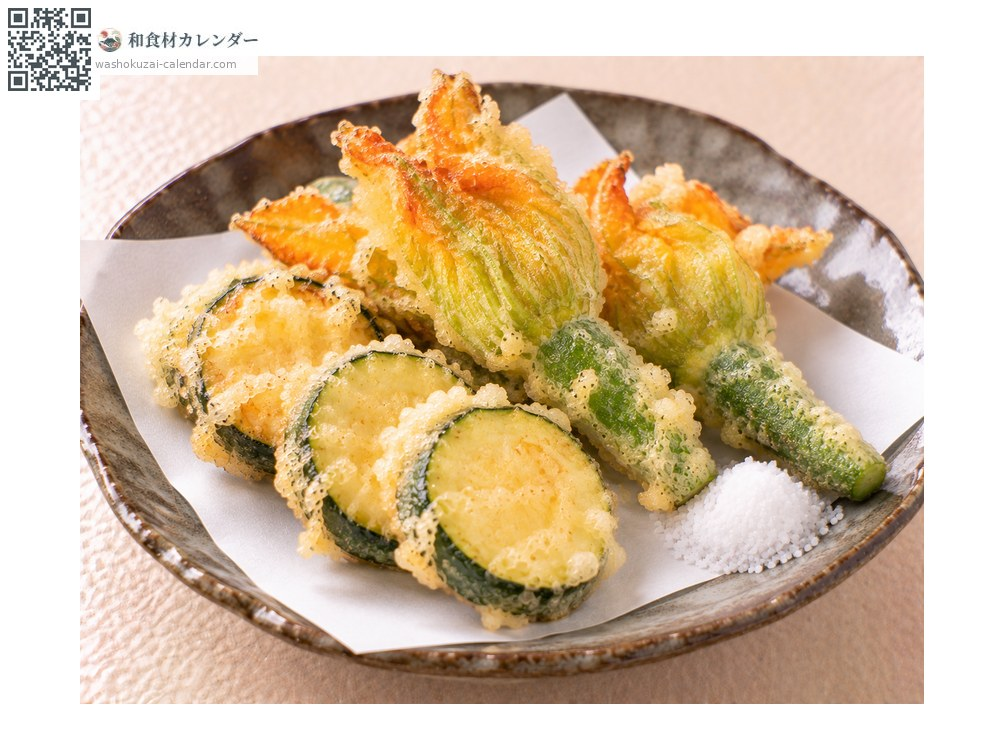
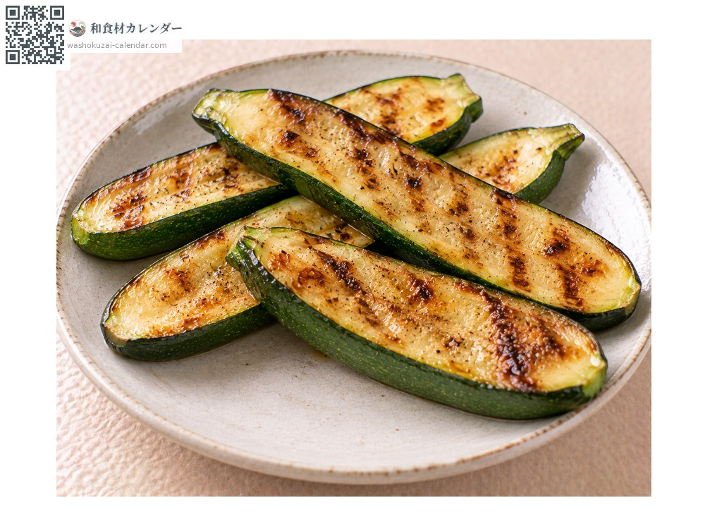

蔬菜
櫛瓜
ズッキーニ ずっきーに
當令時期為5月、6月、7月

當令時期
1月
2月
3月
4月
5月
6月
7月
8月
9月
10月
11月
12月
當令有供應
料理方式

香煎
切成圓片用橄欖油煎，只撒鹽就很美味。

普羅旺斯燉菜
與其他夏季蔬菜一起燉，是南法料理的定番。

天婦羅
有時連花一起油炸，味道清淡很配麵衣。

炙烤
縱向切開燒烤，焦痕的香氣格外出色。
挑選方式
粗細均勻、表皮有光澤，拿起來結實。切口沒有乾掉。
保存方式
裝袋冷藏。不耐低溫，不要冰得太冷。
主要產地
小知識
外觀像小黃瓜，其實屬於南瓜家族，食用的是未成熟的果實。花也可以吃，在義大利常做成鑲餡油炸。日本從1980年代才開始普及，算是比較新的蔬菜。